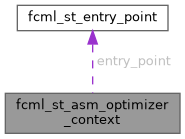

|
fcml 1.3.0
|
Optimizer context used as a connector with the environment. More...
#include <fcml_optimizers.h>

Public Attributes | |
| const fcml_st_entry_point * | entry_point |
| Instruction's entry point provided by the caller. | |
| fcml_uint16_t | optimizer_flags |
| Optimizer flags passed through the assembler context. | |
Optimizer context used as a connector with the environment.
| const fcml_st_entry_point* fcml_st_asm_optimizer_context::entry_point |
Instruction's entry point provided by the caller.
The same which is available in the assembler context.
| fcml_uint16_t fcml_st_asm_optimizer_context::optimizer_flags |
Optimizer flags passed through the assembler context.